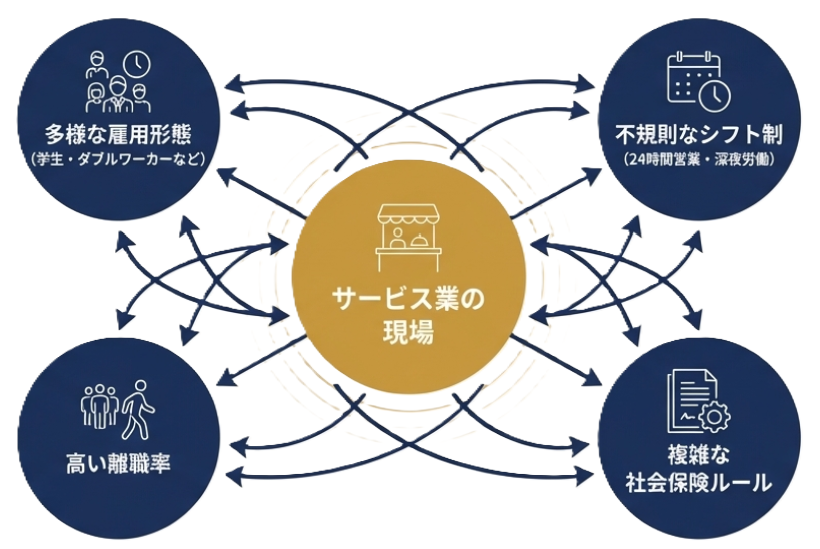

飲食店 / 従業員30名
店長が注意できない職場を改善
Before
指導とパワハラの境界が曖昧で、遅刻や接客態度を注意しづらい状態に。
After
注意の手順、記録の残し方、相談ルートを整備。問題の放置や人間関係の悪化が減り、離職や採用のやり直しコストも抑えやすくなりました。
アセント社労士事務所は、大阪市中央区・堺筋本町を拠点に、法律だけでなく「現場で運用できる形」まで見て支援します。 労務を安定させることは、採用費やトラブル対応費のブレを小さくし、経営の数字をじわじわ守る仕事でもあります。
15年
サービス業人事労務経験
1万人
アルバイト規模の現場対応
大阪
中央区・堺筋本町拠点
現場
法律と運用をつなぐ支援
現場と法律をつなぐ社労士
REPRESENTATIVE
Nagata Mitsuhiro
アセント社労士事務所 代表 ／ 社会保険労務士
アルバイト1万人規模のサービス業を含む現場で、15年にわたり人事・労務に関わってきました。制度だけ整えても、現場で運用できなければ意味がありません。
一方で、現場に合わせることばかりを優先すると、あとで大きなコストになることもあります。
法律を守りながら現場が回り、利益がブレにくい状態をどう作るか。その難しさも価値も見てきた立場で、解決策を一緒に考えます。
その原因が商品や集客ではなく、労務にあることは少なくありません。採用してもすぐ辞める、店長が疲弊する、トラブル対応に時間もお金も取られる。 こうしたことが続くと、売上が安定していても利益が残りにくくなります。
レストラン・居酒屋
ゲーセン・スポーツ施設
スーパー・物販店
訪問介護・歯科医院
シフトを組むたびに、週20時間、扶養、2か月ルールの判断があいまいになる。
採用のやり直しが増え、現場責任者の負担ばかり大きくなっている。
契約更新をしないだけのつもりが、説明不足で大きな問題になりそうで怖い。
対応する人によって説明が変わり、判断のたびに不安が残る。
「それはハラスメントでは」と言われるのが怖くて、必要な指導が止まっている。
労基署や年金事務所から連絡が来たとき、何から確認すべきかわからない。
こうした迷いを放置すると、対応コストや遡及請求が増え、利益が残りにくくなります。
CASE 01
店長の時間が奪われる
トラブル対応に月10時間取られると、接客・教育・改善に使う時間が減り、現場の生産性が落ちていきます。
月収40万円の店長が月10時間対応した場合
23,000円/月
（店長の時給）約2,300円 × 10時間
CASE 02
社会保険の加入漏れ
加入漏れが後から見つかると、遡及加入や保険料負担が一度に発生し、資金繰りに影響することがあります。
月収20万円のアルバイト1人が加入漏れ
696,000円
（事業主負担分）約29,000円 ×（2年遡及）24か月
CASE 03
雇止め・解雇の準備不足
社内整備が不十分であれば問題従業員への対応が進められません。無理に進めると紛争リスクも。周囲への悪影響も心配です。
月収15万円の問題アルバイトを1年間雇用し続けた場合
1,800,000円
150,000円 × 12か月
制度を作るだけでは、現場は変わりません。店長やスタッフが迷わず動ける状態まで落とし込んで、はじめて意味があります。 守秘義務に配慮した形で整理した事例です。
飲食店 / 従業員30名
Before
指導とパワハラの境界が曖昧で、遅刻や接客態度を注意しづらい状態に。
After
注意の手順、記録の残し方、相談ルートを整備。問題の放置や人間関係の悪化が減り、離職や採用のやり直しコストも抑えやすくなりました。
小売業 / パート比率高め
Before
週20時間、扶養、2か月ルールの判断が属人化し、月末にシフト修正が頻発。
After
加入基準と確認タイミングを明文化。月末の修正や説明の行き違いが減り、採用後の運用コストを下げやすい状態になりました。
介護・医療 / 小規模事業所
Before
休職、復職、雇い止めの基準が曖昧で、説明のたびに不安が残る状態に。
After
就業規則と面談フロー、説明資料を整備。後追い対応にかかる時間とコストを減らしやすい状態になりました。
「今すぐ相談するほどではない気がする」。そう感じる段階でも、５分診断で自社の課題を整理する価値は十分あります。 採用コストやトラブルコストを押し上げている原因を、見える形にしていきます。
5分診断
シフト、社会保険、労働時間、ハラスメント、雇い止め。現場で迷いやすい論点を短時間で確認し、「なんとなく不安」を経営課題として見える状態にします。
5分診断を受ける無料相談
経営リスクになる前に、まずは60分の無料相談で、御社の状況に合わせて「どこから整えるべきか」を一緒に確認します。すでにトラブルが起きているという緊急性の高い場合もご相談ください。
無料相談を申し込む相談に進む前に整理できます
「無料診断希望」「資料請求希望」だけでも大丈夫です。必要な支援だけをご相談いただけます。
大切なのは、就業規則や手続きを用意することだけではありません。店長が安心して注意でき、スタッフが納得して働ける状態まで落とし込むことです。 会社ごとの課題に合わせて、現場が迷わず動ける労務の形を整えます。
迷ったときに確認できる相談先を持ち、注意・面談・説明の進め方を現場で使える形に整えます。
週20時間、扶養、2か月ルールなどの判断を整理し、担当者や店長ごとのブレを減らします。
作って終わりではなく、採用・指導・休職・雇止めの場面で実際に使えるルールに整えます。
使えそうなものを並べるのではなく、現場運用と要件を見ながら、現実的に活用できるものを見極めます。
ハラスメントを恐れて必要な指導が止まらないよう、伝え方・記録・相談ルートを整理します。
いきなり顧問契約ではなく、雇止め、休職、注意指導など、今困っている一件から相談できます。
ただ相談するだけだと
一件ごとの回答で終わると、次に似た問題が起きたとき、また同じ迷いが生まれます。
制度を作るだけだと
就業規則があっても、店長やスタッフが使い方を知らなければ、判断は属人化したままです。
アセントなら
相談、手続き、ルール整備、店長研修を組み合わせ、スタッフが納得して働ける状態を作ります。
制度改正を知っているだけでは、現場の問題は解決しません。雇い止め、社会保険加入、副業と残業代、カスタマーハラスメントなど、サービス業で起きやすい論点を発信しています。
↓↓ 最新ブログはパラパラめくって ↓↓
.jpg)
.jpg)


法律を守るだけでも、現場に合わせるだけでも足りません。
正しいだけではなく、続けられること。きれいな制度だけではなく、利益を守れる運用になっていることを重視します。
1万人規模の組織では、さまざまな労務トラブルが日常的に発生します。その量を見てきたからこそ、机上の理屈ではない現実的な答えをご提案できます。
どの問題を放置すると危ないのか。どこから整えれば、採用コストやトラブル対応コストが膨らみにくくなるのか。優先順位をつけて整理できます。
地域の事情や賃金感覚も踏まえて、大阪のサービス業の現場に合う形で支援します。必要なときに相談しやすい距離感も強みです。
就業規則を作る、フローを整える。それだけではなく、本当に現場で使えるかまで見て、利益が安定しやすい状態を一緒に整えていきます。
労務管理は法律に従って進める必要があります。
でも、卓上の理屈だけで現場に落とし込もうとすると、店は回らなくなります。
一方で、現場の都合だけを優先すると、気づかないうちに大きなリスクを抱えることにもなります。
法律を守りながら、現場で無理なく回り、余計なコストが膨らまない形を作ります。

無理に契約をおすすめすることはありません。「まず状況を整理したい」という段階でも大丈夫です。
STEP 01
無料診断、資料請求、無料相談のいずれかからご連絡ください。
STEP 02
今の状況を整理し、どこでコストが膨らみやすいのかを確認します。
STEP 03
継続支援が必要な場合は、内容と費用をご案内します。
STEP 04
ご納得いただけた場合のみ、支援を開始します。
法律と現場の両方を見ながら、採用費やトラブル対応費がふくらみにくく、利益が安定しやすい労務の形を一緒に整えます。 売上が安定していても、利益が安定しない会社をなくすために。
〒541-0054 大阪府大阪市中央区南本町2-3-12 EDGE本町3階
地下鉄 堺筋本町駅から徒歩２分
| 屋号 | アセント社労士事務所 |
|---|---|
| 設立日 | 2025年7月16日 |
| 所属 | 大阪府社会保険労務士会 |
| 所在地 | 大阪市中央区南本町2-3-12 EDGE本町3階 |
労務の迷いは、問題が起きてから相談するより、迷っている段階で整理した方がうまくいきます。
「無料診断希望」「資料請求希望」だけでも大丈夫です。
よくあるお問い合わせ
A. はい、大丈夫です。
まずはスポット相談や、無料診断・資料請求から始めていただけます。必要に応じて、継続支援をご検討ください。A. はい、ご相談可能です。
特に強みを発揮しやすいのは、飲食、小売、娯楽・レジャー、介護・医療などのサービス業です。内容によっては、他業種でも十分にお力になれるケースがあります。A. もちろん可能です。
人数規模にかかわらず、人と現場の課題がある会社さまを支援しています。小さいうちにルールを整えることで、後からの修正コストを抑えやすくなります。A. 大丈夫です。
現状を一緒に整理しながら、何が課題で、何から手をつけるべきかを確認していきます。まずは「無料診断希望」だけでもお送りください。